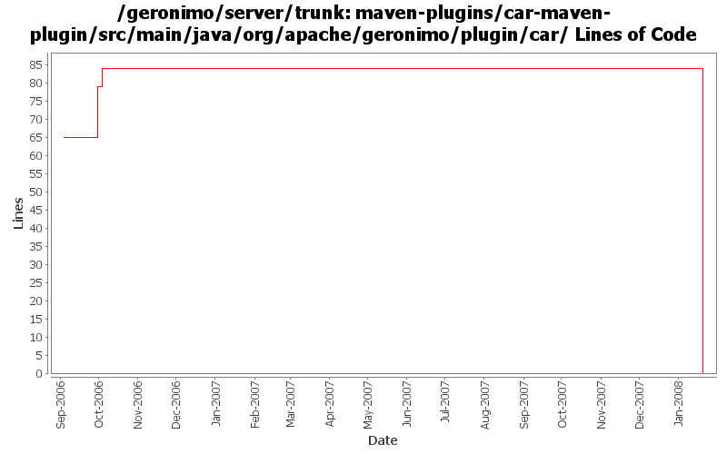

[root]/maven-plugins/car-maven-plugin/src/main/java/org/apache/geronimo/plugin/car

| Author | Changes | Lines of Code | Lines per Change |
|---|---|---|---|
| Totals | 34 (100.0%) | 90 (100.0%) | 2.6 |
| jdillon | 31 (91.2%) | 89 (98.9%) | 2.8 |
| djencks | 1 (2.9%) | 1 (1.1%) | 1.0 |
| gdamour | 2 (5.9%) | 0 (0.0%) | 0.0 |
(GERONIMO-3771) Moved maven-plugins/* to buildsupport/*, updated groupId to org.apache.geronimo.buildsupport
0 lines of code changed in 9 files:
Adding new geronimo-module packaging
starting to refactor to remove the need to override maven's dependency scope to apply custom import types
13 lines of code changed in 3 files:
Update to use new header
Fixed some minor formatting
Fixed some usage of $Id$
Fixed selenium-maven-plugin usage about outputs since last refactoring
76 lines of code changed in 11 files:
GERONIMO-2453 - car-maven-plugin does not support empty plans
In the case of an empty document, the XmlCursor needs to be moved to the
end of the empty node such that XmlCursor.beginElement inserts inside it.
0 lines of code changed in 2 files:
GERONIMO-2409 Provide aliasing for configurations. Works surprisingly well: I expected something similar would be needed for Configuration and Kernel gbean lookups
1 lines of code changed in 1 file:
Update to reflect new package names for some genesis bits
Moved JCL Log adapter to plugin-support
0 lines of code changed in 8 files: